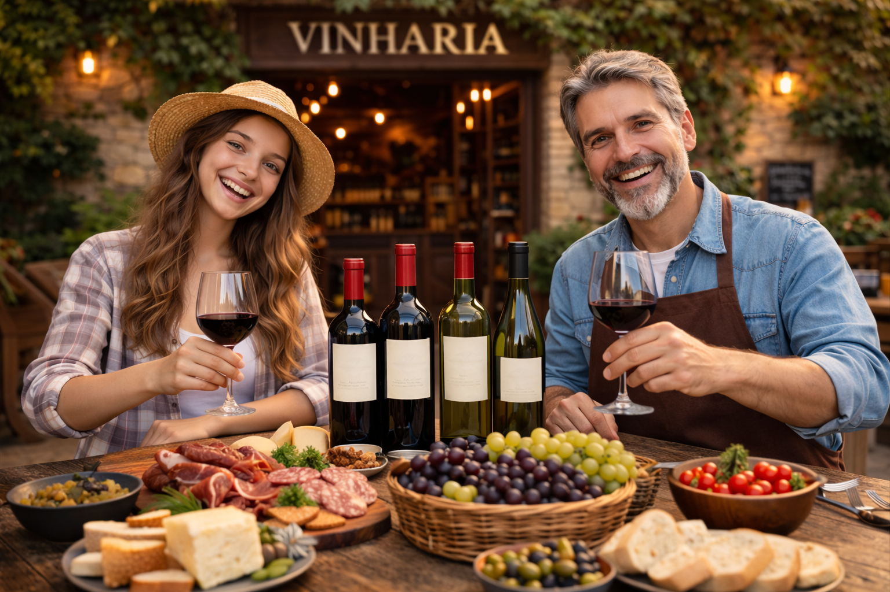

Dicas de harmonização!
Uma das maiores dúvidas dos clientes é escolher o vinho certo para acompanhar cada refeição.
Veja algumas sugestões simples:
- Vinho tinto com carnes vermelhas.
- Vinho branco com peixes e frutos do mar.
- Vinho rosé com pratos leves.
- Espumante com sobremesas e comemorações.
- Massas com molho vermelho combinam com vinhos tintos.
Para saber mais sobre vinhos, visite o artigo sobre vinho.
